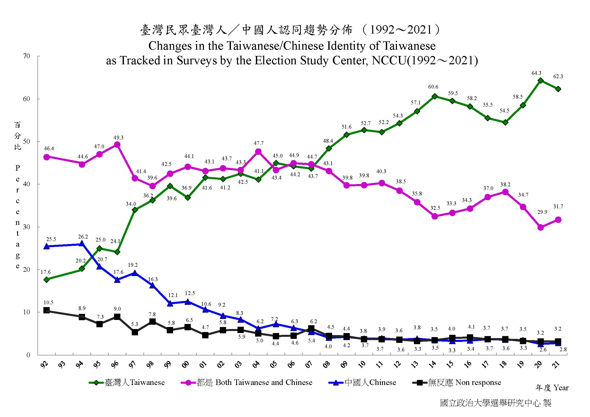

舉例~
蘇格拉底教授平均一堂課當掉80%的學生; 柏拉圖教授平均一堂課當掉50%的學生。不同立場的期望數值決定兩位教授的評價。
維基百科依變項尺度再分類為兩個家族
Kirk (1996): 某種延緩阿滋海默症患者智力退化的療程測試，找來6名患者接受測試，另外6名接受對照療程。經過一段時間，接受測試療程的患者智力測驗平均分數比對照療程高13分，統計檢定t = 1.61, p = .14。這種結果無統計顯著性，但是沒有實用顯著性嗎？
示範effectsize套件，轉換t統計值為Cohen’s d
## Run the below code for requirement
## install.packages("effectsize")
effectsize::t_to_d(1.61, 10)## d | 95% CI
## --------------------
## 1.02 | [-0.32, 2.31]理想的效果量測量以發生作用的母群為對象，現實考量只能取得隨機樣本進行測量，形成測量誤差與精確性等研究方法課題。
講究實用顯著性，效果量大小是重點；講究統計顯著性，效果量測量精確性是關鍵。
日常生活的成年人士依賴效果量大小資訊做出各種判斷
你自已有興趣或想研究的主題，有什麼明確的效果量描述？
Ellis (2010) Box 2.1 測試兩大科幻族群的忠誠度
| N | Mean | SD | t | p | Cohen’s d | |
|---|---|---|---|---|---|---|
| Study 1 | ||||||
| 星戰粉 | 15 | 25 | 9 | 1.52 | >.05 | 0.56 |
| 星艦迷 | 15 | 20 | 9 | |||
| Study 2 | ||||||
| 星戰粉 | 30 | 25 | 9 | 2.15 | <.05 | 0.56 |
| 星艦迷 | 30 | 20 | 9 |
所有統計分析輸出的效果量只是真實效果量的估計值！
明確說明使用的效果量指標
以信賴區間表示效果量測量結果的精確性
d = 0.25 95%CI [0.6 0.41]
一種效果量的陳述，對不同族群有不同意義。

正向心理學的減憂鬱療程(Woodworth et al., 2018)：CESD憂鬱感量表
共有20題，4選項單選題，其中4題是反向題
微小效果量在合理的脈絡有巨大意義：疫情二級警戒期間，學校有兩位人員確診，要立即停課。
少數事件造成的效果可能引發更影響更大的事件：數千公里外的海底火山爆發，幾小時後可能會發生海嘯。
微小效果積少成多可能帶來巨大改變：棒球隊勝率與球員打擊率的正相關。
微小效果的發現在關鍵時機帶來技術革新或觀念更新：1854 Broad Street cholera outbreak
再現研究與過去研究估計的效果量不一致：研究操作的不同？測量對象的特質不同？新研究是新發現？
不同時空測得的效果量貢獻獨特的意義：整合分析(meta analysis)總和不同研究的效果量估計。
更嚴謹的最新研究所估計的效果量，能更新理論的逼真度(Verisimilitude, Scheel et al., 2021)
適用場景：(1)新開創的研究問題；(2)保守預測重製研究的結果
| Test | Effect size index | small size | medium size | large size |
|---|---|---|---|---|
| Comparison of independent means | \(d, \triangle, Hedges'g\) | .20 | .50 | .80 |
| Comparison of two correlations | q | .10 | .30 | .50 |
| Difference between proportions | Cohen’s g | .05 | .15 | .25 |
| Correlation | r | .10 | .30 | .50 |
| \(r^2\) | .01 | .09 | .25 | |
| Cosstabulation | \(w, \phi, V, C\) | .10 | .30 | .50 |
| ANOVA | \(f\) | .10 | .25 | .40 |
| \(\eta^2\) | .01 | .06 | .14 | |
| Multiple regression | \(R^2\) | .02 | .13 | .26 |
| \(f^2\) | .02 | .15 | .35 |